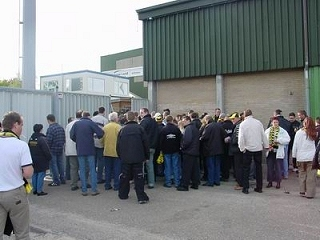
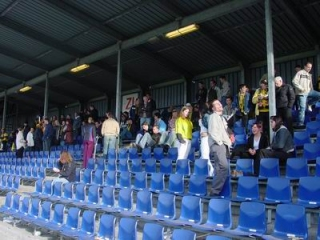
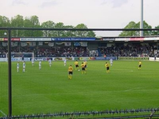
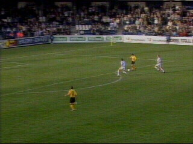
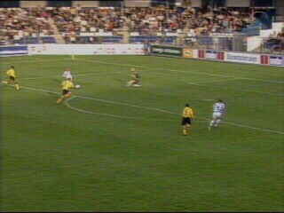
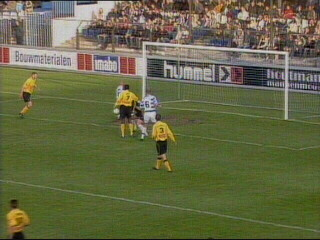
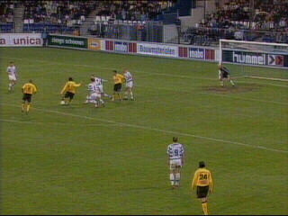
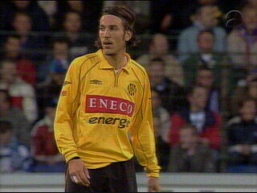
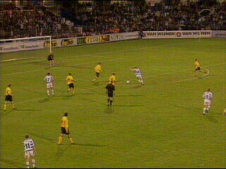

|
FC Zwolle - Roda JC (3-1) 3 mei 2003 |

De meegereisde Roda-supporters....

....hebben plaats genoeg in het gastenvak.

Het "prachtige"uitzicht in het Oosterenk.

Van Dessel probeert het zelf waar hij beter op de
vrijstaande Soetaers had kunnen afleggen.

Addo heeft zijn dag niet en biedt Promes de kans
om op de lat te schieten waarna R. Roelofsen de
terugspringende bal inschiet (10').

Roorda grijpt naast de bal waarna Promes 2-0
scoort (15').

Anastasiou legt de bal op Vicelich die scoort in
de 71e min.

Ivan Vicelich kwam in het veld voor Van Dijk en
Addo werd vervangen door San Dijk en
Addo werd vervangen door Sonkaya. Later werd
Soetaers vervangen door Jongen.

Het gelummel van Roda werd in de 93e min.
afgestraft door een goal van Morten Karlsen.
Roda leed de vierde nederlaag op rij waardoor de
kans op Europees voetbal vrijwel verkeken is.
© Koempels
Pleasure Dome